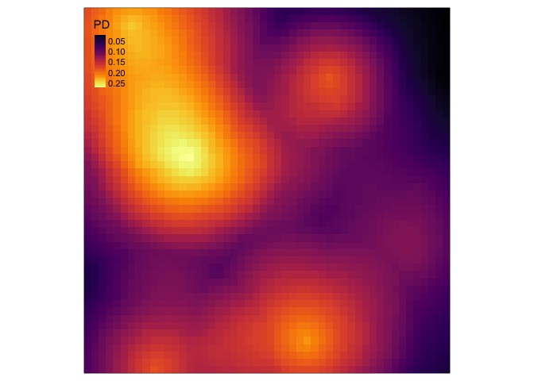
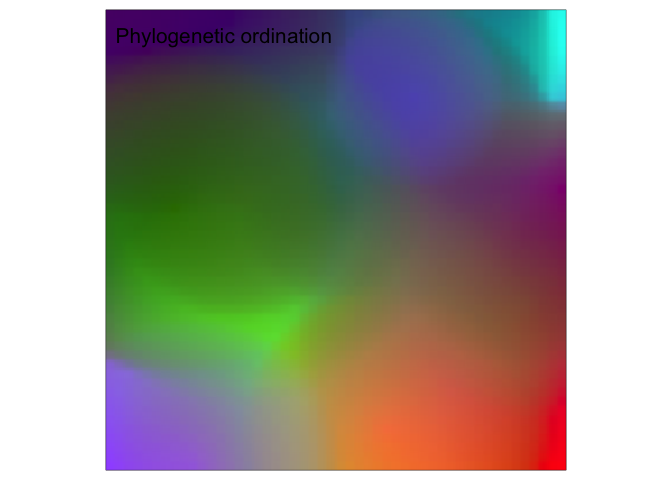
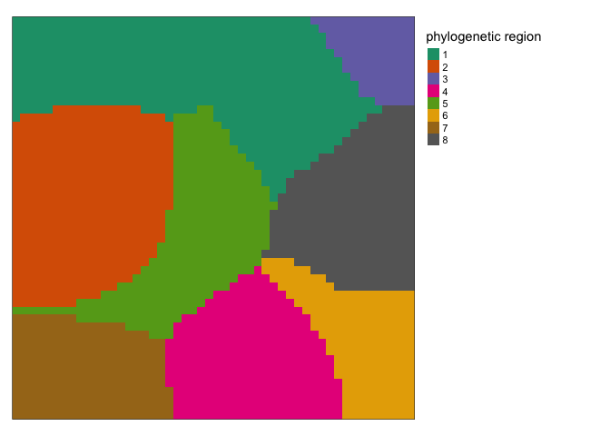
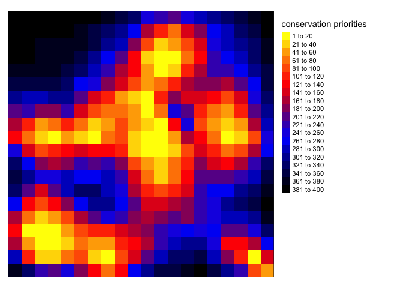

spatialphy is an R package for spatial phylogentic analysis. The field of spatial phylogenetics focuses on accounting for evolutionary relationships among taxa when describing biodiversity patterns, an approach that has a number of advantages over species-based accounting. This library currently includes functions for computing:
- diversity measures like phylogenetic diversity
- turnover measures like phylogenetic betaendemism
- phylogenetic regionalization
- phylogenetic conservation prioritization
One feature that differentiates spatialphy from some similar packages is that in addition to working with binary presence/absence data, it’s also designed to work with continuous quantities such as occurrence probabilities or abunances. These quantities are treated as weights throughout all the analyses in the package, avoiding the need to discard information by thresholding the data.
Installation
This package is not yet on CRAN. You can install the development version of spatialphy like so:
# install.packages("remotes")
remotes::install_github("matthewkling/spatialphy")Examples
Spatial phylogenetic analyses require two essential ingredients: data on the geographic distributions of a set of organisms, and a phylogeny representing their evolutionary relationships. All workflows in the spatialphy package involve creating a data set of class 'spatialphy' containing these necessary components. A user would normally define this object with their own data using the sphy() function, but we can also simulate a demonstration dataset using sphy_simulate().
To get started, let’s load the spatialphy library and simulate a demo data set. To get a peek at the underlying data, let’s plot the geographic ranges of the terminal species:
library(spatialphy)
library(tmap); library(magrittr)
set.seed(123)
sp <- sphy_simulate(n_tips = 20, n_x = 50, n_y = 50)
tm_shape(get_tip_occs(sp, spatial = TRUE)) +
tm_raster(palette = "inferno", style = "cont", title = "occurrence\nprobability")
Alpha diversity
We can pass this our spatialphy object to various other functions in the library. The sphy_diversity() function calculates a number of alpha diversity measures, including phylogenetic diversity (PD) and phylogenetic endemism (PE), among others. Let’s calculate the diversity metrics and make a plot of PD:
div <- sphy_diversity(sp)
names(div)
#> [1] "TR" "CR" "PD" "TE" "CE" "PE" "Em" "RPD" "PEm" "RPE"
tm_shape(div$PD) + tm_raster(palette = "inferno", style = "cont")
We can also use randomization to calculate the significance of these diversity metrics under a null model, using the sphy_rand() function. The default null model uses a stratified randomization designed for use with continuous occurrence data. Let’s run 100 randomizations and plot the results for PE. This is a quantile value that gives the proportion of randomizations in which observed PE was greater than randomized PE in a given grid cell (if you wanted to identify “statistically significant” grid cells in a one-tailed test with alpha = 0.05, these would be cells with values greater than 0.95).
rand <- sphy_rand(sp, n_rand = 100)
#> | | | 0% | |= | 1% | |= | 2% | |== | 3% | |=== | 4% | |==== | 5% | |==== | 6% | |===== | 7% | |====== | 8% | |====== | 9% | |======= | 10% | |======== | 11% | |======== | 12% | |========= | 13% | |========== | 14% | |========== | 15% | |=========== | 16% | |============ | 17% | |============= | 18% | |============= | 19% | |============== | 20% | |=============== | 21% | |=============== | 22% | |================ | 23% | |================= | 24% | |================== | 25% | |================== | 26% | |=================== | 27% | |==================== | 28% | |==================== | 29% | |===================== | 30% | |====================== | 31% | |====================== | 32% | |======================= | 33% | |======================== | 34% | |======================== | 35% | |========================= | 36% | |========================== | 37% | |=========================== | 38% | |=========================== | 39% | |============================ | 40% | |============================= | 41% | |============================= | 42% | |============================== | 43% | |=============================== | 44% | |================================ | 45% | |================================ | 46% | |================================= | 47% | |================================== | 48% | |================================== | 49% | |=================================== | 50% | |==================================== | 51% | |==================================== | 52% | |===================================== | 53% | |====================================== | 54% | |====================================== | 55% | |======================================= | 56% | |======================================== | 57% | |========================================= | 58% | |========================================= | 59% | |========================================== | 60% | |=========================================== | 61% | |=========================================== | 62% | |============================================ | 63% | |============================================= | 64% | |============================================== | 65% | |============================================== | 66% | |=============================================== | 67% | |================================================ | 68% | |================================================ | 69% | |================================================= | 70% | |================================================== | 71% | |================================================== | 72% | |=================================================== | 73% | |==================================================== | 74% | |==================================================== | 75% | |===================================================== | 76% | |====================================================== | 77% | |======================================================= | 78% | |======================================================= | 79% | |======================================================== | 80% | |========================================================= | 81% | |========================================================= | 82% | |========================================================== | 83% | |=========================================================== | 84% | |============================================================ | 85% | |============================================================ | 86% | |============================================================= | 87% | |============================================================== | 88% | |============================================================== | 89% | |=============================================================== | 90% | |================================================================ | 91% | |================================================================ | 92% | |================================================================= | 93% | |================================================================== | 94% | |================================================================== | 95% | |=================================================================== | 96% | |==================================================================== | 97% | |===================================================================== | 98% | |===================================================================== | 99% | |======================================================================| 100%
tm_shape(rand$qPE) + tm_raster(palette = "inferno", style = "cont")
Beta diversity (turnover)
We can also look at patterns in the phylogenetic similarity among locations. The first step here is to compute the community phylogenetic distance between every pair of sites, using the sphy_dist() function to add a pairwise distance matrix as an additional component in our spatialphy dataset.
sp <- sphy_dist(sp, add = TRUE)Having done this, we can then assess spatial turnover patterns in a couple ways. We can qualitatively visualize compositional differences by converting the distance matrix to a set of colors representing how similar two sites are to each other, using the sphy_rgb() function:
sp %>%
sphy_rgb(method = "cmds") %>%
tm_shape() +
tm_rgb(max.value = 1) +
tm_layout(title = "Phylogenetic ordination")
We can also perform a more formal cluster analysis that splits the landscape into a set of evolutionary bioregions, using the sphy_regions() function. Let’s ask for eight regions using the “kmeans” clustering method:
sp %>%
sphy_regions(k = 8, method = "kmeans") %>%
tm_shape() +
tm_raster(style = "cat", palette = "Dark2",
title = "phylogenetic region") +
tm_layout(legend.outside = T)
Conservation prioritization
Finally, this package can perform a basic spatial conservation prioritization, identifying priority locations for the creation of new protected areas in order to maximize biodiversity protection. This is done using the sphy_prioritize() function, which uses a greedy forward stepwise algorithm to produce a nested ranking of conservation priorities.
In addition to the required spatial phylogenetic dataset, there is the option to supply a raster layer indicating the locations and effectiveness of existing protected areas. We could also modify parameters that specify the effective level of protection provided by new reserves, as well as the shape of the “benefit” function that determines the relative importance of protecting the initial populations of every taxon versus more populations of more phylogenetically distinct taxa. But for this example let’s stick with the defaults. In the map below, the highest-priority sites are shown in yellow.
sp %>%
sphy_prioritize() %>%
tm_shape() +
tm_raster(palette = "-inferno", style = "log10",
title = "conservation\npriorities") +
tm_layout(legend.outside = T)
#> | | | 0% | | | 1% | |= | 1% | |= | 2% | |== | 2% | |== | 3% | |== | 4% | |=== | 4% | |=== | 5% | |==== | 5% | |==== | 6% | |===== | 6% | |===== | 7% | |===== | 8% | |====== | 8% | |====== | 9% | |======= | 9% | |======= | 10% | |======= | 11% | |======== | 11% | |======== | 12% | |========= | 12% | |========= | 13% | |========= | 14% | |========== | 14% | |========== | 15% | |=========== | 15% | |=========== | 16% | |============ | 16% | |============ | 17% | |============ | 18% | |============= | 18% | |============= | 19% | |============== | 19% | |============== | 20% | |============== | 21% | |=============== | 21% | |=============== | 22% | |================ | 22% | |================ | 23% | |================ | 24% | |================= | 24% | |================= | 25% | |================== | 25% | |================== | 26% | |=================== | 26% | |=================== | 27% | |=================== | 28% | |==================== | 28% | |==================== | 29% | |===================== | 29% | |===================== | 30% | |===================== | 31% | |====================== | 31% | |====================== | 32% | |======================= | 32% | |======================= | 33% | |======================= | 34% | |======================== | 34% | |======================== | 35% | |========================= | 35% | |========================= | 36% | |========================== | 36% | |========================== | 37% | |========================== | 38% | |=========================== | 38% | |=========================== | 39% | |============================ | 39% | |============================ | 40% | |============================ | 41% | |============================= | 41% | |============================= | 42% | |============================== | 42% | |============================== | 43% | |============================== | 44% | |=============================== | 44% | |=============================== | 45% | |================================ | 45% | |================================ | 46% | |================================= | 46% | |================================= | 47% | |================================= | 48% | |================================== | 48% | |================================== | 49% | |=================================== | 49% | |=================================== | 50% | |=================================== | 51% | |==================================== | 51% | |==================================== | 52% | |===================================== | 52% | |===================================== | 53% | |===================================== | 54% | |====================================== | 54% | |====================================== | 55% | |======================================= | 55% | |======================================= | 56% | |======================================== | 56% | |======================================== | 57% | |======================================== | 58% | |========================================= | 58% | |========================================= | 59% | |========================================== | 59% | |========================================== | 60% | |========================================== | 61% | |=========================================== | 61% | |=========================================== | 62% | |============================================ | 62% | |============================================ | 63% | |============================================ | 64% | |============================================= | 64% | |============================================= | 65% | |============================================== | 65% | |============================================== | 66% | |=============================================== | 66% | |=============================================== | 67% | |=============================================== | 68% | |================================================ | 68% | |================================================ | 69% | |================================================= | 69% | |================================================= | 70% | |================================================= | 71% | |================================================== | 71% | |================================================== | 72% | |=================================================== | 72% | |=================================================== | 73% | |=================================================== | 74% | |==================================================== | 74% | |==================================================== | 75% | |===================================================== | 75% | |===================================================== | 76% | |====================================================== | 76% | |====================================================== | 77% | |====================================================== | 78% | |======================================================= | 78% | |======================================================= | 79% | |======================================================== | 79% | |======================================================== | 80% | |======================================================== | 81% | |========================================================= | 81% | |========================================================= | 82% | |========================================================== | 82% | |========================================================== | 83% | |========================================================== | 84% | |=========================================================== | 84% | |=========================================================== | 85% | |============================================================ | 85% | |============================================================ | 86% | |============================================================= | 86% | |============================================================= | 87% | |============================================================= | 88% | |============================================================== | 88% | |============================================================== | 89% | |=============================================================== | 89% | |=============================================================== | 90% | |=============================================================== | 91% | |================================================================ | 91% | |================================================================ | 92% | |================================================================= | 92% | |================================================================= | 93% | |================================================================= | 94% | |================================================================== | 94% | |================================================================== | 95% | |=================================================================== | 95% | |=================================================================== | 96% | |==================================================================== | 96% | |==================================================================== | 97% | |==================================================================== | 98% | |===================================================================== | 98% | |===================================================================== | 99% | |======================================================================| 99% | |======================================================================| 100%